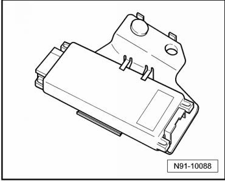
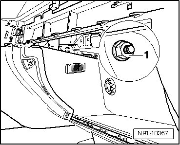
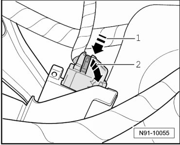
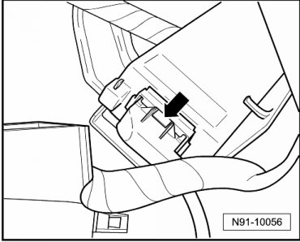

Communications Control Module: Service and Repair
Telephone Operating Electronics Control Module, Through 11.06

The telephone operating electronics control module is installed at the left above the glove compartment.
Removing
- Remove cover from glove compartment.
- Remove owner's manual compartment.
- Remove radio or radio navigation system if this was not already done with removal of the owner's manual compartment. "Delta" radio, removing. Refer to --> [ Delta Radio ], "Radio Navigation System 2" with MFD, removing --> [ Radio Navigation System 2 with 6.5 inch Color Display ] Radio Navigation System 2 with 6.5 inch Color Display.
- Remove control module bracket mounting bolt from inside glove compartment - 1 -.

- Remove operating electronics control module and guide it into glove compartment with bracket and wires connected.
- Release connector by pressing on catch spring - 1 - and swing bracket - 2 - in direction of arrow.

- Release connector by pressing on catch spring - arrow - and remove connector.

Installing
Install in reverse order of removal.